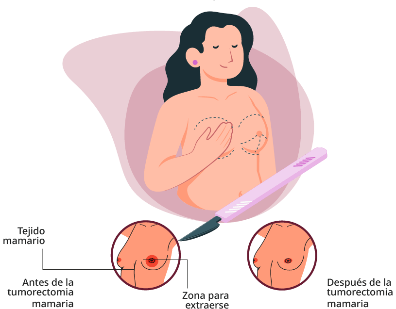
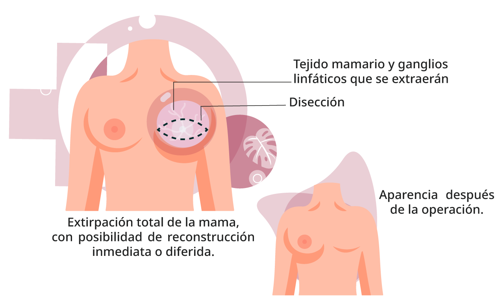

1. Tratamiento del Cáncer de Mama
Tratamiento locorregional
 Da clic para conocer los diferentes procesos que se incluyen en esta clasificación:
Da clic para conocer los diferentes procesos que se incluyen en esta clasificación:

Preserva la mama, extirpando
el tumor con márgenes adecuados.


Para evaluación del compromiso linfático.
Página 4 de 13